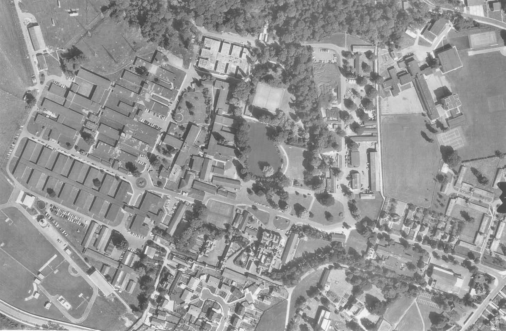

Study of the domain
"This is only a foretaste of what is to come, and only the
shadow of what is going to be"
– The Times Newspaper, 11 June 1949
September 1939. With the German invasion of Poland, the United Kingdom and France declare war on
the Third Reich: it is the beginning of the Second World War, a conflict that will change the
world.
Around the same time, in Bletchley Park (Buckinghamshire, UK) the Government Code and
Cypher School starts working on understanding the German
Enigma machine, a cipher device employed extensively by Nazi Germany and extremely secure
because of the daily switch of the machine settings.
Cracking Enigma was considered fundamental to win the conflict, and a large staff of
cryptographers was involved for this purpose in September 1939.
Amongst them there was the young mathematician Alan Turing.
Already interested in
subjects such as relative computing, Turing was also keen on cryptanalysis and he played a
crucial role in improving
the cracking of intercepted coded messages. Testifying his work, in 1940 Turing wrote the report
"Treatise on the Enigma", also known as "The Prof’s Book"
from the nickname given to him by his colleagues at Hut 8, in Bletchley.
Despite his contribution to many scientific fields, Turing was isolated from the professional
world because of his conviction for gross indecency for homosexual acts in 1952.
Only after many public requests the Government granted him an apology and Queen Elizabeth II
officially pronounced Turing pardoned in August 2014.
Nonetheless, over the years Turing has been broadly celebrated and remembered: in 1996 the BBC
broadcast "Breaking the Code", a television movie focused on the mathematician's life;
in 1998 an official English Heritage blue plaque was unveiled at his birthplace in London
and in 2014 the movie "The Imitation Game" was theatrically released, receiving many
nominations and winning an Academy Award.
Finally, in 2012, on the 100th anniversary of his birth, many more organisations and
institutions all over the world honoured Turing and his legacy. Some examples include, but are
not limited to: the Italian graphic novel "Enigma: la strana vita di Alan Turing";
the Google Doodle depicting a live action Turing Machine and the Alan Turing Centenary
Conference, an academic conference hosted by the University of Manchester, where Turing
worked up until his death.